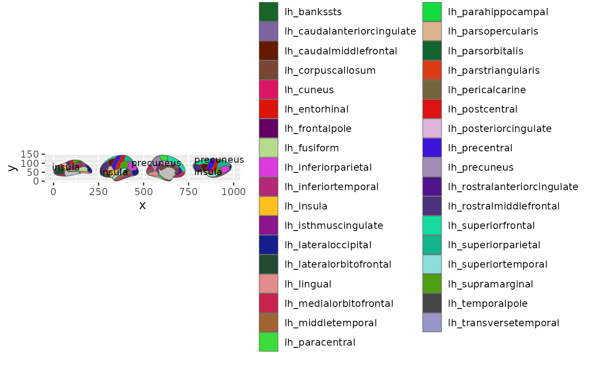

geom_brain_text() writes a region's name onto the region;
geom_brain_label() draws it in a box, the same distinction ggplot2 makes
between ggplot2::geom_text() and ggplot2::geom_label().
Usage
geom_brain_text(
mapping = NULL,
data = NULL,
atlas = NULL,
position = NULL,
hemi = NULL,
view = NULL,
nudge_x = 0,
nudge_y = 0,
...,
inherit.aes = FALSE
)
geom_brain_label(
mapping = NULL,
data = NULL,
atlas = NULL,
position = NULL,
hemi = NULL,
view = NULL,
nudge_x = 0,
nudge_y = 0,
...,
inherit.aes = FALSE
)Arguments
- mapping
Aesthetic mapping, as in any layer. The text defaults to the region's display name; map
labelto write something else.- data
Regions to name. Defaults to every region the brain layer draws. A data frame keyed on
label– or onregion– names only the regions it holds.- atlas
The atlas to label. Taken from the
geom_brain()layer it follows when not given.- position, hemi, view
Taken from the
geom_brain()layer it follows when not given, so the labels sit where the regions are.- nudge_x, nudge_y
Move the label off its region, in atlas units – the same units the plot's axes are in, so a
dkview being about 215 units wide, 30 is a visible shift. One value moves every label; a vector as long as the data moves each one separately. A nudged label keeps a leader line back to its region and turns to face away from it.- ...
Passed to
ggplot2::geom_text()orggplot2::geom_label():size,colour,fontfaceand the rest. The leader line takesbox.paddingandpoint.padding(its gap from the text and from the region) andmin.segment.length(below which it is not drawn at all).- inherit.aes
Whether to inherit the plot's aesthetic mapping.
Details
Added after a geom_brain() layer, it takes that layer's atlas, layout,
hemisphere and view, so the names land on the regions without repeating
what the plot already says:
ggplot() +
geom_brain(atlas = dk(), hemi = "left") +
geom_brain_text()To name some regions and not others, hand it data holding those regions,
exactly as any other ggplot2 layer takes a subset. Its columns are
available to the mapping, so the text can be anything the data carries.
Where a label sits
Not at the region's centroid. A crescent or horseshoe region – the
cingulate, a tract – has its centroid outside itself, which would print the
name on a neighbouring structure: measured across the bundled atlases, a
centroid falls outside its own region for 9% of dk shapes and 41% of
tracula ones. The anchor is the middle of the widest run of region that a
horizontal line crosses, which is inside the region by construction.
Aesthetics
Everything ggplot2::geom_text() or ggplot2::geom_label() understands,
and two of its own: segment.colour and segment.linewidth, the colour
and width of the leader line. They are aesthetics rather than arguments so
that one label can be accented and the rest left quiet:
geom_brain_text(
data = regions,
aes(segment.colour = accent, segment.linewidth = weight)
)Neither is scaled, so map them to a column that already holds the values
you want drawn, the way scale_colour_identity() works. A connector given
no colour of its own takes the colour of its text.
label is an aesthetic like any other. Left alone it writes the region's
display name, and mapping it writes whatever you say instead, including an
expression over your own columns:
aes(label = sprintf("%s (%.1f)", region, estimate)).
Moving a label off a cramped region
A region too small or too narrow for its own name is the normal case, not
the exception – banks of superior temporal sulcus is wider than a quarter
of a dk view at 8pt. Nudge those labels clear and the connector back to
the region is drawn for you, so nothing has to be said twice:
ggplot() +
geom_brain(atlas = dk(), hemi = "left", view = "lateral") +
geom_brain_text(
data = data.frame(label = c("lh_insula", "lh_temporalpole")),
nudge_x = c(0, -40),
nudge_y = c(0, -30)
)The label with no nudge is drawn plainly, on its region, with no line.
See also
annotate_brain(), which labels the views rather than the regions.
Examples
library(ggplot2)
ggplot() +
geom_brain(atlas = dk(), hemi = "left") +
geom_brain_text(
data = data.frame(label = c("lh_insula", "lh_precuneus")),
size = 3
)
